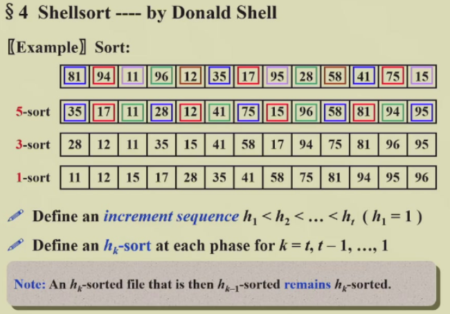
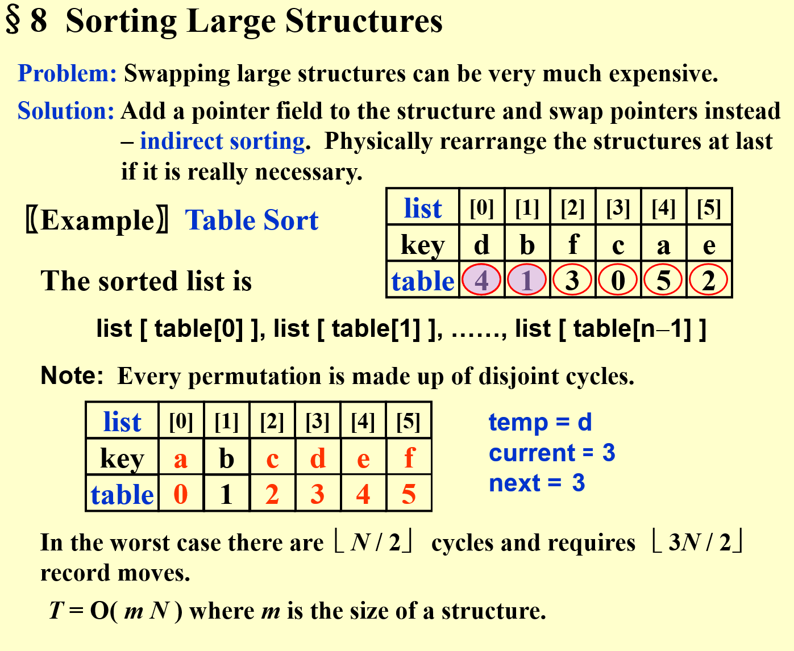
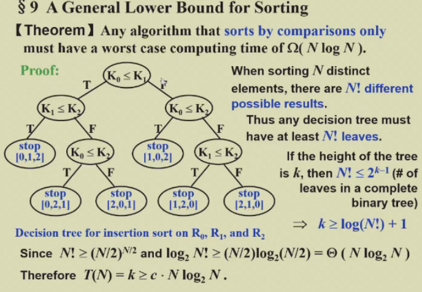
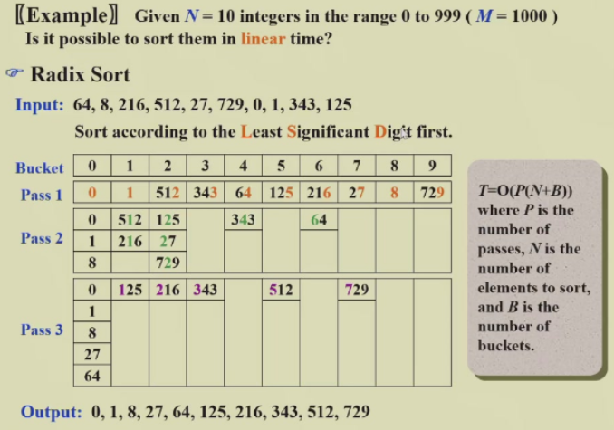
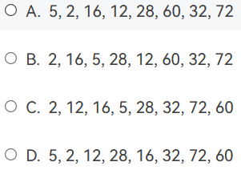

Ch.06 Sorting
Preliminaries¶
约 1241 个字 预计阅读时间 3 分钟
- N must be a legal integer
- Assume integer array for the sake of simplicity
- '>' and '<' operators exist and are the only operations allowed on the input data
- internal sorting 内部排序
Insertion Sort¶
- worst case, decending sequence, \(T=O(N^2)\)
- best case, \(T=O(N)\)
A Lower Bound for Simple Sorting Algortihms¶
- An Inversion 逆序对，index 大小和值的大小相反，类比逆序数问题，假设逆序数为 n
- There are \(n\) swaps needed to sort this list by insertion sort
- \(T(N, I)=O(I+N)\) \(I\)
- 至少需要数组过一遍 \(N\)
- 每个逆序对都需要 swap \(I\)
- 如果本来就接近于排好了，那么接近于 \(O(N)\) Linear
- The average number of inversion in an random array of N distinct numbers is \(N(N-1)/4\)
- Any sorting algorithm that sorts by exchanging adjacent elements requires \(\Omega(N^2)\) time on average
Improvement¶
- 每次排序交换相隔比较远的两个元素
Shellsort¶

- 定义序列 \(h\)，然后进行多次排序，每次 \(h\) 减小，直到最后 \(h=1\)
Naive Shellsort¶
\(h_t=\lfloor N/2\rfloor,\,h_k=\lfloor h_{k+1}/2\rfloor\)
Worst-Case Analysis¶
- \(Theorem\): The worst-case running time of Shellsort is \(\Theta(N^2)\)
- bad-case可能出现前面 \(h>1\) 排完都不变，最后一次排才排好的情况
- sequence 选择素数会有更好的效果
Hibbard's Increment Sequence¶
- \(h_k=2^k-1\)
- \(Theorem\): The worst-case running time of Shellsort, using Hibbard's increments, is \(\Theta(N^{3/2})\)
- \(Conjectures\)
- \(\overline T_{Hibbard}(N)=O(N^{5/4})\)
- Sedgewick's best sequence is \(\{9*4^i-9*2^i+1\} \cup \{4^i-3*2^i+1\}\)
- \(T_{avg}(N)=O(N^{7/6})\) \(T_{worst}(N)=O(N^{4/3})\)
Heapsort¶
- 如果不需要知道所有的顺序，只需要知道最大/最小的几个值，那么 Heapsort 更快
Algorithm 1¶
- \(T(N)=O(N\log N)\)
- con: The space requirement is doubled.
Algorithm 2¶
-
不如直接将 的结果写道数组的后面去
-
\(Note\) that is a valid entry 第零个也是要排序的有效元素
- 对于任意的数组，平均比较次数 \(2N\log N-O(N\log\log N)\)
- \(Note\) Although Heapsort gives the best average time, in practice it is slower than a version of Shellsort that uses Sedgewick's increment sequence 因为常数比较大
Mergesort¶
Merge two sorted lists¶
- \(T=O(N)\)
- 两个 pointer，小的放入新数组，并且 ptr 右移一位，直到 ptr 都到达末尾
Mergesort¶
- 为什么要在外部定义
- 减少内存申请和释放
- 减少空间开销，递归深度 \(\log N\)，每层都要 \(N\) 长度数组，\(S(N)=O(N\log N)\)
\[
\begin{aligned}
T(1)&=1\\
T(N)&=2T(N/2)+O(N)\\
&=2^kT(N/2^k)+k*O(N)\\
&=N*T(1)+\log N*O(N)\\
&=O(N+N\log N)
\end{aligned}
\]
- pro: 适用于 外部排序
- cons
- 需要更多空间 \(S(N)=O(N)\)
- 数组的复制时很慢的
Quicksort¶
The Algorithm¶
- Complexity
- Best case: \(T(N)=O(N\log N)\)
- 每次 的选择都是中位数
- Average case: \(T(N)=O(N\log N)\)
- Best case: \(T(N)=O(N\log N)\)
- Property
- 每次的 在后续的排序中位置不会变化，快的原因
- 选择和 是容易错的地方
Picking the Pivot¶
- A Wrong Way
- Worst case: if is presorted, \(O(N^2)\)
- A Safe Maneuver
- 随机数产生浪费资源
- Median-of-Three Partitioning
- 取其中的中位数
Partition Strategy¶
- Double Pointer
- 和 ，从两边往内走，直到一个
- **如果 **
- 和 都停下来进行
- 虽然可能存在不必要的交换 \(\{1,1,1,1,1,1,1,1\}\)
- 但是至少保证了划分的两部分大小相近
- 否则 \(T(N)=O(N^2)\)
- 和 都停下来进行
Small Arrays¶
- Problem: Quicksort is slower than insertion sort for small \(N\le 20\)
- Solution: N 比较小时，就调用
Implementation¶
- Note: 调用后，左中右的三个元素已经排好了，但是由于 ，实际上跳过了这来哥哥元素。
Analysis¶
- \(T(N) = T(i)+T(N-i-1)+cN\)
- Worst case: \(T(N)=T(N-1)+cN=O(N^2)\)
- Best case: \(T(N)=2T(N/2)+cN=O(N\log N)\)
- Average case
- Assume the average value of \(T(i)\) for any \(i\) is \(\frac{1}{N}[\sum_{j=0}^{N-1}T(j)]\)
-
\[T(N)=\frac{2}{N}[\sum_{j=0}^{N-1}T(j)]+cN=O(N\log N)\]
Quicksort to find the kth largest element
每次找到 pivot 进行 partition 之后，计算大的一边的元素个数，判断第 k 大的元素在哪边，直到其出现在 pivot
\(T(N)=O(N)\) Linear
- Space Complexity 等于递归深度 \(O(\log N)\)
- 最坏情况 \(O(N)\)
Sorting Large Structures¶
- Solution: Add a pointer field to the structure and swap ptrs instead
- Table Sort
- 对于所有的 key，先创建一个 ，用来存储目标的 index
- 构成了 cycle，也就是通过 list index 和 table 目标位置构成的需要交换的 cycle!

- 具体操作时
- 先进行 tablesort
- table 初始化为
- 依据 对 table 中的 index 进行排序
- 然后交换
- 遍历 list，只要出现了 ，那么就进行
- 记录这个 以及这个
- 进行轮换，直到遇到一个元素的 结束
- 遍历 list，只要出现了 ，那么就进行
- 先进行 tablesort
- 构成了 cycle，也就是通过 list index 和 table 目标位置构成的需要交换的 cycle!
- Note: Every permutation is made up of disjoint cycles
- 对于所有的 key，先创建一个 ，用来存储目标的 index
- Analysis
- worst case, \(\lfloor N/2\rfloor\) cycles and \(\lfloor 3N/2\rfloor\) record moves
- \(T=O(mN)\) where \(m\) is the size of the structure
A General Lower Bound for Sorting¶
- \(Theorem\) Any algorithm that sorts by comparisons only must have a worst case computing time of \(\Omega(N\log N)\)
- Can be proved by decision tree

Bucket Sort and Radix Sort¶
Bucket Sort¶
- 对于离散、取值范围很小的数据
- 创建所有数据取值点的 bucket，每个称为 slot槽
- 线性遍历数组，是哪个就放在哪个 slot
- \(T(N, M) = O(M+N)\)
- 如果 \(M\) 远大于 \(N\)，那么效率会很低，不如 quicksort
Radix Sort¶

- 进行多轮排序，每次排一个数位，Least Significant Digit First
- \(T=O(P(N+B))\)
- \(P\) 是 number of passes，也就是位数
- \(B\) 是 number of buckets
MSD (Most Significant Digit)¶
- 高位分到 bucket 之后，每个 bucket 内部
- 可以使用任意的排序算法
- 可以并行操作
LSD (Least Significant Digit)¶
- 高位的排序依赖于低位的排序
- 只能串行进行
HW¶
- After the first run of Insertion Sort, it is possible that no element is placed in its final position
- T
- Shell sort is stable.
- F
- stable 指的是相同的元素在排序前后的顺序是不变的
- 假设存在两个相等的元素，排序之后原本在前面的还是在前面
- Mergesort is stable. T
- During the sorting, processing every element which is not yet at its final position is called a "run". Which of the following cannot be the result after the second run of quicksort?

- 注意
- 这里 quicksort 的 run 指的是递归深度，两层递归能够选定 3 个 pivot 位置
- 这里的 quicksort 实现方式不是选中位数
- A 可能是 72 28
- B 可能是 2 72
- C 可能是 2 28
- D 不可能，只有 32